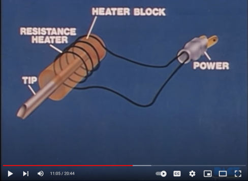
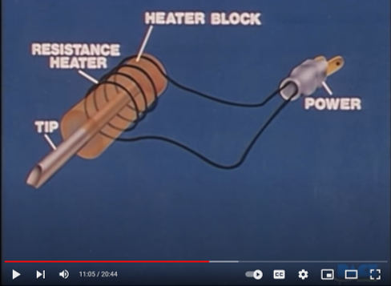

HOW TO SOLDER
Electronics is an unknown field to me, and at the same time very interesting. I discover in this week what is a micro control board and how to solder LEDs and resistors. I felt like training for what is coming next.
The difficulty of this process, in addition to the weld that is new to me, is the size of the components, a magnifying glass is necessary to maneuver the operation.
In this gif, Emilio and I were practicing with and already used board, because when we did it in class we let ours. It was very tricky process, I think I could damage the LEDs, but we didn´t know how to test it, so, how to make a reliable connection?.
At the beginning, we were wrong with the spots to solder, it is important to know how the circuit board actually works, then we figured it out, and we had to remove the LEDs to put them again in the proper way.

This video helps to undertand the process and options to solder in a very graphic an basic way. In general, you have to move fast to avoid the decreasing temperature and take care to not damage any item. I require more practice...
 
